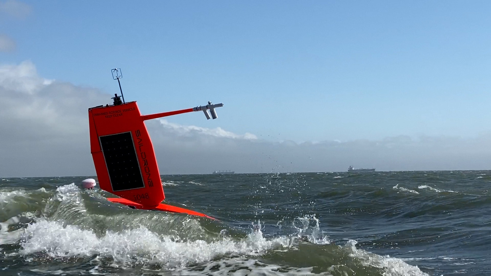
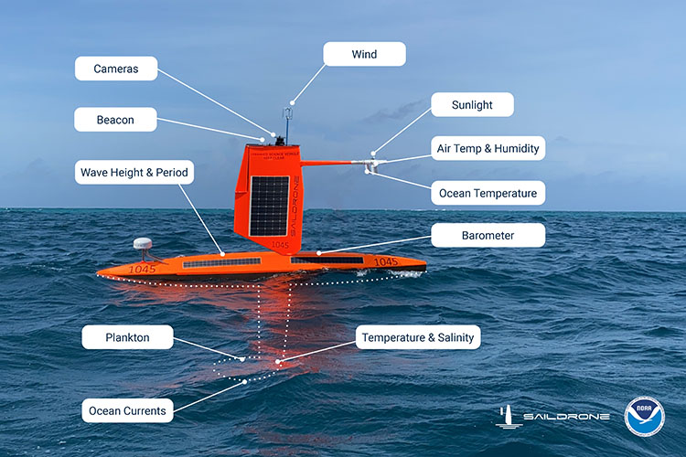
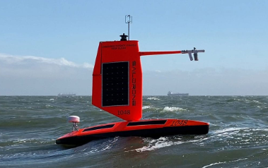
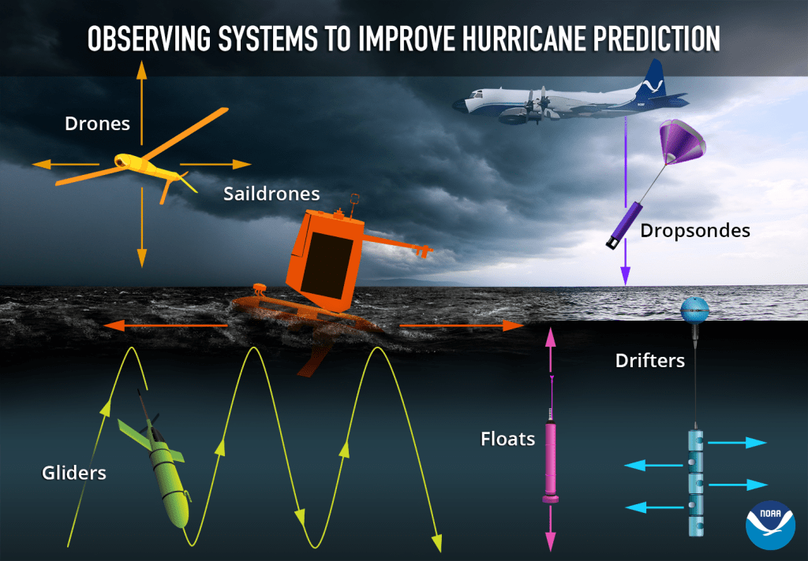
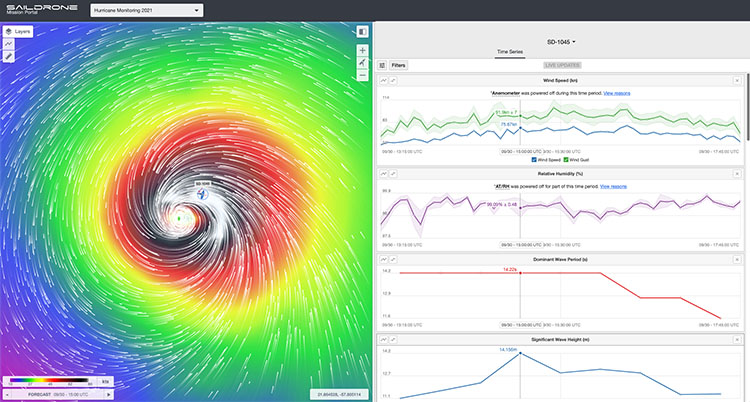

NOAA Saildrone Hurricane Observations

Background
While great strides have been made in the field of hurricane prediction, one area that remains a challenge is the prediction of rapid storm intensification. Storms that intensify rapidly can cause extensive damage and loss of life, and having real-time, in-situ monitoring data is crucial for predicting these storms.
This is why NOAA's Pacific Marine Environmental Laboratory (PMEL) and Atlantic Oceanographic and Meteorological Laboratory (AOML) are partnering with Saildrone, Inc. to observe hurricanes in real time. Saildrones are uncrewed surface vehicles powered by wind and solar energy and remotely piloted. They are capable of making multiple concurrent measurements of the environment including wind speed, wave height, temperature, pressure, and salinity (see diagram below).
The saildrones are able to transmit data back in real time to agencies that will use it to predict hurricane paths and intensities. For this project, several specially constructed saildrones have been fitted with short wings best suited for handling hurricane-force conditions. A successful mission in 2021 has led to a second monitoring mission in 2022, along with additional missions hopefully in the near future.

Objectives
Saildrone observations typically cover the peak of the hurricane season (August 1-October 31). They are normally deployed to areas where the chances of hurricane occurrence are high, and each mission has the following goals:
(1) Measure near-surface atmospheric and upper-ocean parameters to calculate energy and momentum fluxes between the atmosphere and ocean outside and within hurricanes. |
 |
(2) Integrate observations from saildrones, ocean gliders, and air-deployed instruments and drones to measure the coupling between the atmosphere and upper ocean. |
 |
(3) Transmit data in real-time to operational weather prediction centers to improve atmosphere-ocean initial conditions in forecast models. |
 |
(4) Apply the observations to understand how air-sea interaction affects hurricane intensity and to advance hurricane prediction models. |
 |
Results
Keep up with the progress of the 2022 mission on the blog here.
In 2021, one saildrone was directed through the eyewall of category-4 Hurricane Sam, measured waves of up to 27.5 m (90 ft) and near-surface winds of 55 m/s (125 mph), and recorded this video:
Additionally, saildrones and ocean gliders were coordinated to take simultaneous measurements of the upper ocean and surface ocean-atmosphere conditions, and other saildrones observed four tropical storms (Fred, Grace, Henri, Peter).
Several researchers have already released publications based on the 2021 mission, available here, and mission data are publicly available here.
This project is supported by NOAA's Office of Oceanic and Atmospheric Research (OAR), Office of Marine and Aviation Operations (OMAO), and Weather Program Office (WPO) in collaboration with Saildrone, Inc.